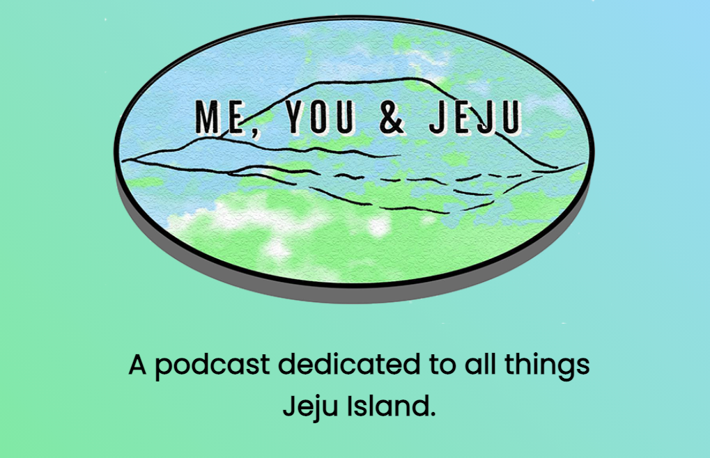

A podcast dedicated to all things Jeju Island.
2023 Episode Notes
Episode 29
Jeju rockets into the space race
Episode 28
Everything you need to know about the 2023 Jeju Olle Walking Festival
Episode 27
The clone dogs days of Jeju summer
Special Episode
Fukushima submerges a tired Jeju in worry
Episode 26

Rockets and Drugs and Crows, oh my!
Episode 25
Episode 24
Revisiting and revising the Jeju Massacre
See episode notes from other years